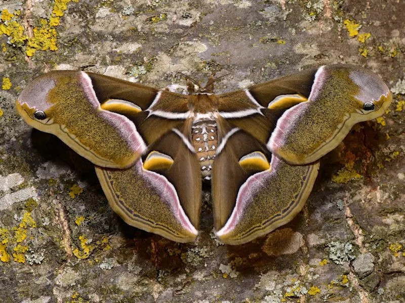

昆虫 · 动物界
樗蚕蛾 Samia cynthia

翅面带蛇头状斑纹的一种大型蚕蛾，幼虫取食臭椿和蓖麻，茧可缫丝，曾被人工饲养用于绢丝生产，是常见的观赏蛾类。
- 分类
- 门节肢动物门纲昆虫纲目鳞翅目科天蚕蛾科属樗蚕蛾属
- 栖息环境
- 林缘、果园、城镇绿地，臭椿和蓖麻等植物附近
- 地理分布
- 中国、日本、朝鲜半岛和东南亚
- 保护级别
- 暂无评估
物种志
樗蚕蛾翅展约 10–13 cm，体粗壮，翅面橄榄褐至黄褐色，前翅顶角附近有蛇头状的斑纹，翅面中央有半透明的月牙斑，翅缘有浅色带。雌蛾体型较大，腹部饱满，触角羽状，雄蛾触角更宽。
它生活在林缘、果园和城镇绿地，成虫夜间活动，有趋光性，口器退化不取食，寿命约 1–2 周。幼虫取食臭椿、蓖麻、乌桕等植物叶片，体色绿色带白色粉状物，身体有瘤突。樗蚕蛾分布于中国、日本、朝鲜半岛和东南亚，茧可缫丝，蓖麻蚕就是它的人工饲养品系，曾在一些地区作为绢丝昆虫推广，如今主要作为观赏蛾类和生物学研究对象。它的幼虫体色鲜艳，身体带瘤突和白色粉状物。
形态与习性
- 食性幼虫取食臭椿、蓖麻、乌桕等叶片；成虫不取食
- 翅展约 10–13 cm
- 识别前翅顶角有蛇头状斑纹，翅面有月牙斑
- 经济茧可缫丝，蓖麻蚕是其人工饲养品系
- 分布中国、日本、朝鲜半岛和东南亚
趣味知识
- 樗蚕蛾前翅顶角的斑纹像蛇头，可以用来吓退天敌。
- 它的茧可以缫丝，人工饲养的品系叫蓖麻蚕。
- 成虫不吃不喝，只靠幼虫期储存的营养完成繁殖。